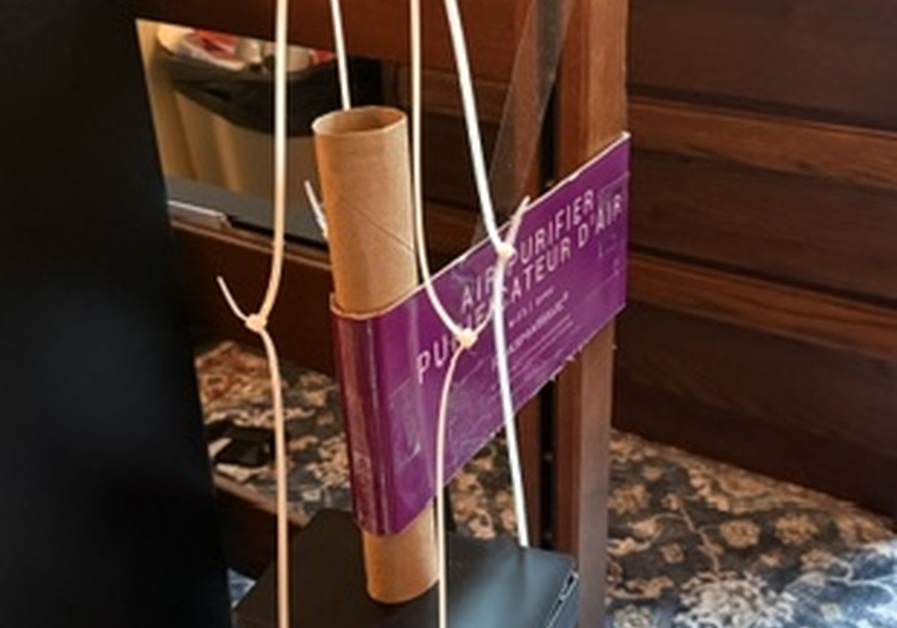
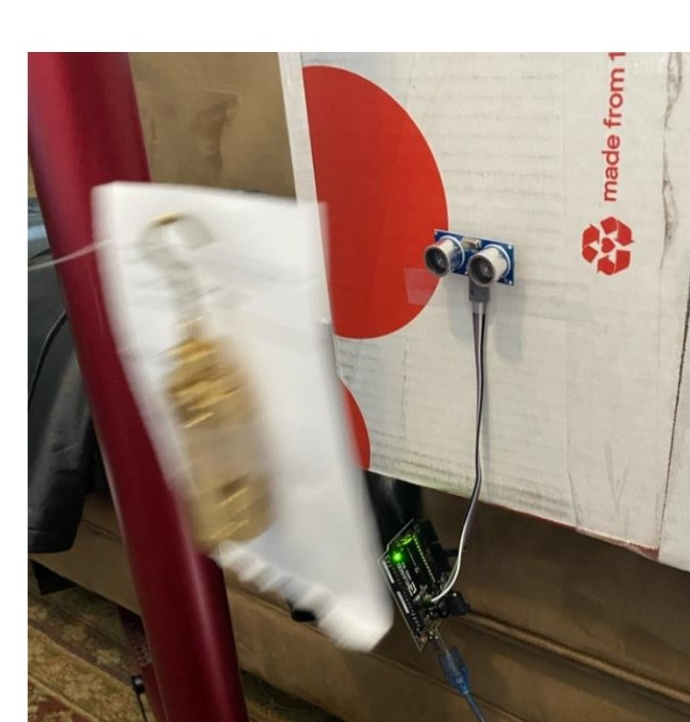
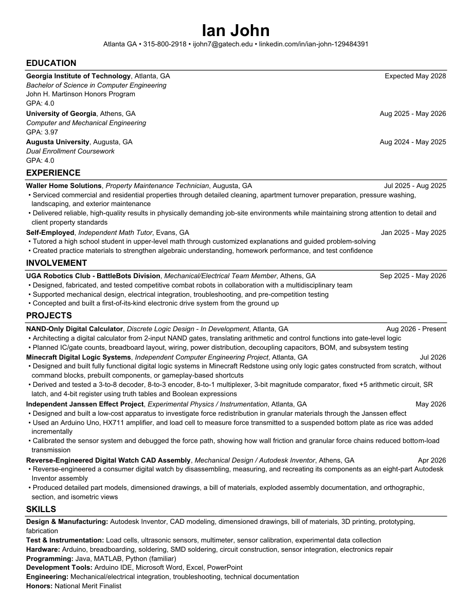

Computer engineering · Georgia Tech
Ian John.
Building a Little
More Everyday.
I’m a computer engineering student interested in Computers and all things engineering. My projects bring together digital logic, mechanical design, and hands-on projects.
OBJECT STUDY / 001APRIL 2026
AUTODESK INVENTOR
01 / Selected work
Projects!
A selection of builds and experiments, from the geometry of a wristwatch to strange physics behavior.
A growing collection of engineering projects and experiments. Each case study explains the problem and process.
A watch, taken apart.
From a physical teardown to an Autodesk Inventor assembly, dimensioned drawings, and exploded views.

Where does the weight go?
A load cell, an Arduino, and a column of rice reveal how granular materials redirect force.

Making motion measurable.
Tracking force and position to connect simple harmonic motion with real measurements.
GENERATE / VERIFYA WRITER–CHECKER EXPERIMENT
Can a model check a model?
An iterative writer/checker experiment exploring continuity, perspective, and the limits of automated critique.
0 1BOOLEAN LOGIC
Logic, one gate at a time.
Decoders, multiplexers, arithmetic, and memory built from scratch in Minecraft Redstone.
¬(A · B)NAND-ONLY DIGITAL LOGIC
A calculator from NAND gates.
An ongoing exploration of arithmetic and control using one fundamental gate type.
In development02 / About me
Understanding Curious
Components.
I’m Ian, a computer engineering student at Georgia Tech and a member of the John H. Martinson Honors Program.
My path has included dual-enrollment coursework at Augusta University and computer and mechanical engineering studies at the University of Georgia.
At UGA, I worked with the Robotics Club’s BattleBots division on mechanical design, electrical integration, fabrication, and testing. Working across those areas made troubleshooting a practical part of the design process. A mechanism, its electronics, and the way they fit together all affect the final result.
My independent projects let me explore those connections more closely. I’ve used load cells and an Arduino to investigate physical systems, recreated a digital watch in CAD, and built logic circuits in Minecraft using gates constructed from scratch. I’m now developing a calculator from two-input NAND gates to connect Boolean logic with a physical breadboard implementation.
Digital logicAutodesk InventorArduinoInstrumentationJavaMATLABPrototypingTechnical documentation
03 / Career direction
From digital foundations
to high-performance hardware.
01 / BUILD THE FOUNDATION
Understand the hardware.
At Georgia Tech, my interests center on Computing Hardware & Emerging Architectures and Systems & Architecture. I want to connect digital logic, computer architecture, and programming so I can reason about a system from individual gates through its software interface. The NAND calculator is one way I’m practicing that connection.
02 / MOVE INTO IMPLEMENTATION
Learn, simulate, and verify.
My next step is to develop skills in hardware description languages such as Verilog or SystemVerilog, then use simulation and an FPGA board to test small designs. I want to learn how clocking, timing, pipelining, and resource use change an implementation, and document those tradeoffs with measured results.
03 / APPLY IT TO REAL SYSTEMS
Build toward a focused role.
I plan to pursue hardware internships and collaborative projects where I can practice verification, integration, and debugging. Over time, I’d like to work on projects involving data movement or low-latency processing. A master’s degree is another option I’m exploring if it adds focused technical depth and supports that direction.
Resume / Ian John
Engineering through
building and testing.
Computer engineering student at Georgia Tech with experience in CAD, instrumentation, digital logic, and mechanical/electrical integration.
Education
Expected May 2028
Georgia Institute of Technology
Bachelor of Science in Computer Engineering
John H. Martinson Honors Program · GPA: 4.0
August 2025 – May 2026
University of Georgia
Computer and Mechanical Engineering · GPA: 3.97
August 2024 – May 2025
Augusta University
Dual Enrollment Coursework · GPA: 4.0
Experience
July – August 2025 · Augusta, GA
Property Maintenance Technician
Waller Home Solutions
- Serviced commercial and residential properties through cleaning, apartment turnover preparation, pressure washing, landscaping, and exterior maintenance.
- Delivered reliable results in physically demanding job-site environments while maintaining attention to detail and client property standards.
January – May 2025 · Evans, GA
Independent Math Tutor
Self-employed
- Tutored a high school student in upper-level math using customized explanations and guided problem-solving.
- Created practice materials to strengthen algebraic understanding, homework performance, and test confidence.
Involvement
September 2025 – May 2026 · Athens, GA
UGA Robotics Club — BattleBots Division
Mechanical/Electrical Team Member
- Designed, fabricated, and tested competitive combat robots with a multidisciplinary team.
- Supported mechanical design, electrical integration, troubleshooting, and pre-competition testing.
- Concepted and built an electronic drive system from the ground up.
Selected projects
August 2026 – Present · In development
NAND-Only Digital Calculator
Architecting arithmetic and control functions from two-input NAND gates. Planned gate counts, breadboard layout, power distribution, decoupling, bill of materials, and subsystem testing.
July 2026
Minecraft Digital Logic Systems
Built decoders, encoders, a multiplexer, comparator, arithmetic circuit, latch, and register using gates constructed from scratch, without command blocks or prebuilt components.
May 2026
Independent Janssen Effect Project
Designed a low-cost granular-materials apparatus using an Arduino Uno, HX711 amplifier, and load cell. Calibrated the sensor and debugged the mechanical force path.
April 2026
Reverse-Engineered Digital Watch
Disassembled and measured a digital watch, recreated its components in Autodesk Inventor, and produced assembly drawings, a bill of materials, and exploded-view documentation.
Skills & honors
Design and manufacturing
Autodesk Inventor, CAD modeling, dimensioned drawings, bills of materials, 3D printing, prototyping, and fabrication.
Hardware and instrumentation
Arduino, breadboarding, soldering and SMD soldering, circuit construction, electronics repair, load cells, ultrasonic sensors, multimeters, sensor calibration, and experimental data collection.
Programming and tools
Java, MATLAB, Python (familiar), Arduino IDE, Microsoft Word, Excel, and PowerPoint.
Engineering practice
Mechanical/electrical integration, troubleshooting, and technical documentation.
Honors
National Merit Finalist

05 / Get in touch
Let’s build something.
I’m interested in hardware projects, engineering internships, and conversations about digital design. Email is the best way to reach me.